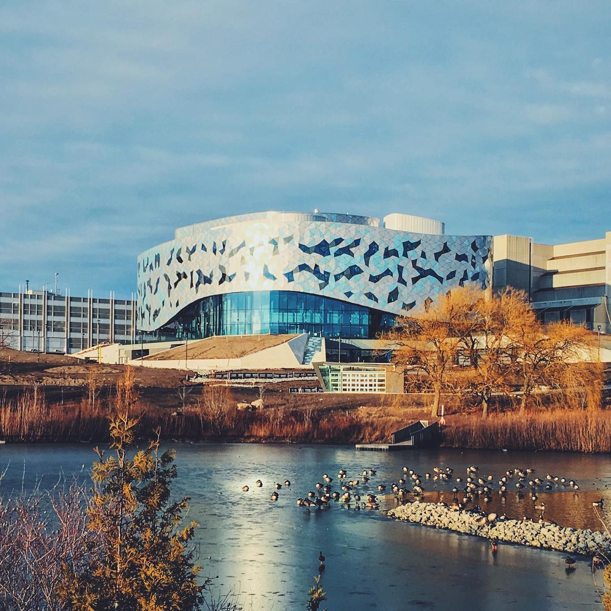

My name is Giuseppe D’Orazio and I am a computer science student in my third year at York University. I have been interested in computer science and coding for many years, and I decided to pursue it as my career path. What I value most in my career journey is just to find a job which challenges me, allows me to make a positive impact on the world, and sustains me enough to live a comfortable life without worrying about not being able to pay the bills.
I have been into video games and technology for as long as I can remember. I have always been fascinated by how games work and how they are made. As a kid I was always on my Nintendo DS, and once I got my first laptop I was fascinated by the internet and all the different things you could do with it. In high school I took my first computer science courses and I really enjoyed them. I found it to be a very creative and rewarding subject, and I decided to pursue it in university. I am now in my first co-op term, and am excited to see where my career takes me in the future!
